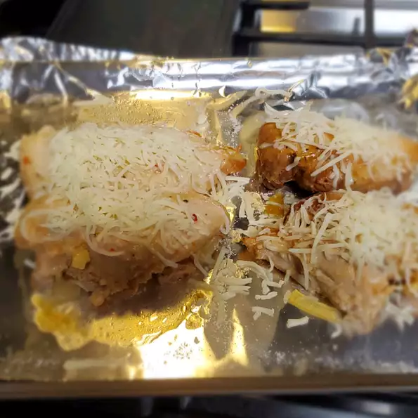

Easy Italian Chicken

A recipe on the the allrecipes website created by user MARIONWE.
It is a baked chicken recipe that takes just over two hours to
prepare, and creates six servings.
Ingredients
- 1 (16 ounce) bottle Italian-style salad dressing
- 6 skinless, boneless chicken breast halves
Steps
-
Pour salad dressing into a large resealable plastic bag.
Add chicken breasts, seal bag, and shake to coat. Marinate in the
refrigerator for at least 1 hour or overnight (the longer you marinate,
the more flavor the chicken will absorb).
-
Preheat the oven to 350 degrees F (175 degrees C).
-
Remove chicken from marinade and place in a lightly greased 9x13-inch
baking dish; discard remaining marinade.
-
Bake in the preheated oven, turning chicken occasionally, until cooked
through and juices run clear, about 1 hour. An instant-read thermometer
inserted into the center should read at least 165 degrees F (74 degrees C).
Return to homepage